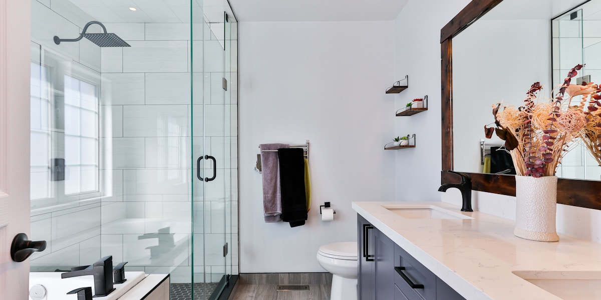
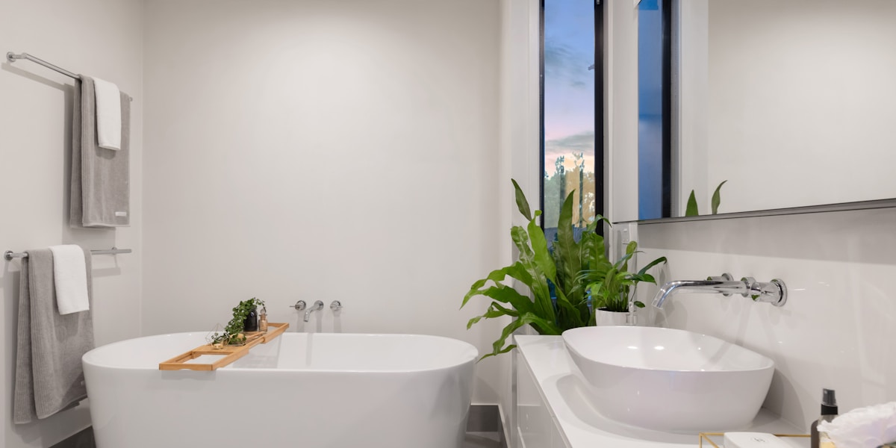

Вспомните ванные из старых домов времен СССР и сравните их с современными вариантами в новостройках. Неужели однажды мы умудрялись обходиться всего лишь 1,5 кв. м в туалете и 3 кв. м в ванной, как это было в сталинских эпохах? И какие тенденции ожидают нас в 2026 году? Давайте разбираться!
📊 Ключевые факты: эволюция в цифрах
Ванные комнаты в разное время: сталинки, хрущевки, брежневки
🏛️ Сталинки (1930-1950-е годы)
В сталинках санузлы были раздельными. Площадь туалета составляла 1,5 кв.м, ванная же могла занимать от 3,2 до 4 кв. м в элитных вариантах и до 8-10 кв. м в лучших. Интересным решением было совмещение окна в ванной с кухней для вентиляции.

🏢 Хрущёвки (1950-1960-е годы)
В эпоху хрущевок мы видим появление совмещенного санузла площадью от 2 до 3,2 кв. м. Размеры ванн стали стандартизированными: 150x70 см или 170x70 см. Материал изготовления — чугун, который служил более 30 лет.
💡 Интересный факт
Чугунные ванны в хрущёвках служили более 30 лет и зачастую переживали несколько поколений жильцов. Многие из них до сих пор в рабочем состоянии!
🏘️ Брежневки (1970-1980-е годы)
Брежневки предложили улучшенную площадь до 3,9 кв. м, но всё ещё без биде и душевых кабин.
Современные новостройки
С 2008 года нормы площади ванных комнат в новостройках стали значительно превышать прежние стандарты. Минимум 6 кв. м по нормам Москвы, где туалет занимает 0,9 кв.м, а ванная — 3 кв.м в старых сериях как П44Т.

🎨 Тренды 2026 года
В 2026 году в моде минимализм и функциональность. В малых пространствах, например, в хрущевках, предпочтение отдается:
- Открытым душам вместо ванн
- Стеклянным перегородкам для визуального расширения пространства
- Скрытым системам хранения (тумбы, пеналы)
- Индивидуализированному дизайну с учётом сценариев использования
💬 Экспертные мнения
Несмотря на технические улучшения, ванные комнаты СССР остаются утилитарными и типовыми с минимумом мебели. Сегодня ванная — это зона комфорта с утонченной эстетикой и тишиной.
📋 Изменение норм в 2008 году
Минимальная площадь была увеличена до 6 кв.м из-за массовых жалоб жильцов на тесноту. Это стало важной вехой в развитии современного жилищного строительства.
✅ Практические советы
Если вы живете в хрущевке, где площадь ванной составляет 2-3 кв. м, вот что можно сделать:
- Замените ванну на душ со стеклянной перегородкой — освободите до 40% пространства
- Добавьте тумбу под раковину для организации хранения
- Используйте светлые тона для визуального расширения
- Установите крупноформатную плитку — меньше швов, проще уход
В общем, независимо от площади и возраста вашей ванной, помните о главном: она должна быть комфортной для вас. Минимализм и функциональность — вот что действительно важно.